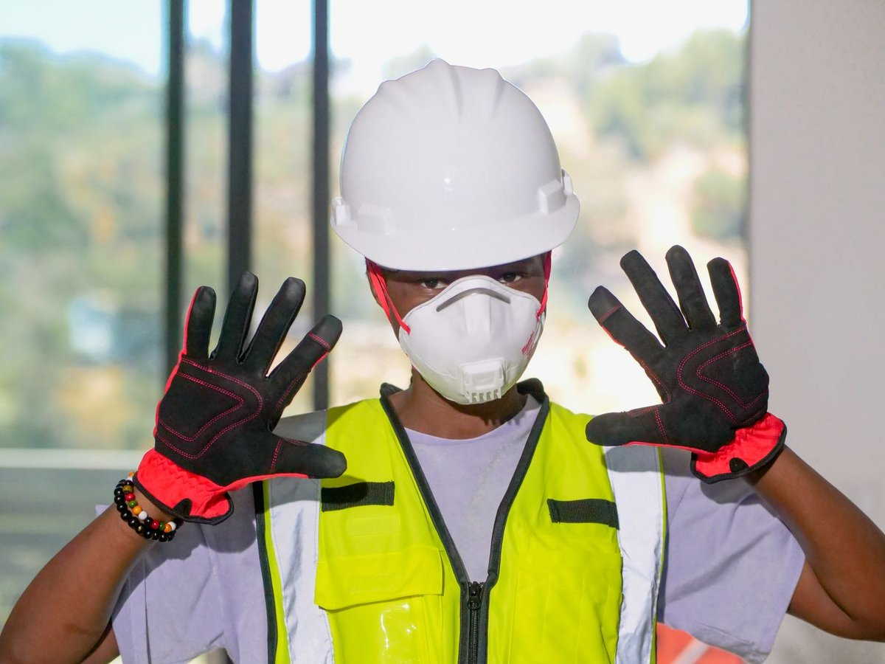

Quality products
Equipment and systems selected to suit the application and the client's requirements.
Daroob Al-Khalij is a Saudi-owned company based in Riyadh, serving businesses and institutions with fire protection, security and industrial safety solutions.

DAROOB AL-KHALIJ · RIYADHWe bring together products, systems and technical services to support the needs of organizations of different sizes. Our focus spans fire alarm and suppression, security systems, personal protection and industrial safety supplies.
Our work includes sourcing and distribution as well as installation, system activation and periodic maintenance. For portable fire extinguishers, the company also describes mobile servicing at customer sites.
See how we can support your site ↗Equipment and systems selected to suit the application and the client's requirements.
A company-stated priority that helps keep procurement and site work moving.
Support across supply, installation, activation and ongoing maintenance.
Solutions and sourcing options shaped around project requirements.
Saudi Vision 2030 describes a vibrant society as one in which people enjoy a high quality of life, and identifies strengthening the safety and security of society among its objectives. Daroob’s fire protection and workplace safety work is a practical contribution to safer facilities in the Kingdom.
Read the Vision 2030 overview ↗The company profile presents business registration and activity documentation alongside a portfolio of safety and firefighting work. Those documents belong to the supplied profile; please contact the company for current copies or project references.
Talk with Daroob ↗